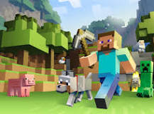

Quando Minecraft foi lançado e quem criou? Veja 10 perguntas ... A primeira vez que Minecraft surgiu na internet foi em 2009 como projeto online do programador sueco Markus "Notch" Persson — hoje conhecida como versão "Classic". O usuário podia mexer nos blocos, mas ainda não havia os elementos de sobrevivência que tornariam a série tão popular.
Minecraft é um jogo em que você constrói coisas com blocos, em um mundo virtual aberto e livre para explorar. É o que os gamers chamam de 'sandbox', porque funciona mesmo como uma caixa de areia, em que o único limite para o jogador é a própria imaginação e a prática.
Como jogar Minecraft [10 dicas para iniciantes no game ... Como o nome diz, Minecraft é um jogo onde as principais mecânicas são mineração e criação (crafting) de itens e ferramentas. Em posse dos materiais certos, como madeira, ferro e pedra, você pode criar elementos de construção, armas e armaduras. .